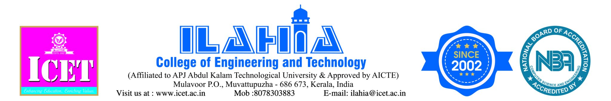

lahia College of Engineering and Technology (ICET), established in 2002, is a pioneering self-financing engineering institution in Kerala, approved by AICTE, New Delhi, and affiliated with APJ Abdul Kalam Technological University (KTU). Over two decades of academic excellence, the institution has produced 21 batches of engineers who serve in key professional and entrepreneurial roles. ICET remains committed to inclusive education through scholarships and free education initiatives, fostering future leaders in engineering and technology.
The Department of Computer Applications was established in 2008 with an intake of 60 Students. MCA Department, right from its inception, has been maintaining a good track record in all areas of academics and non-academics. It serves with the prime objectives of educating and preparing learners as dynamic professionals so that they can compete in the present global situation.
In addition to the regular curriculum, the Department conducts technical seminars, workshops, and industrial visits to expose the learners to the real-world environment. The placement cell of the department constantly organizes training programs for learners in communication skills, aptitude, reasoning ability, group discussion skills, etc. A good number of our final year learners and alumni are placed in reputed organizations like Wipro, IBS, Speridian and ClaySys through the Campus Recruitment Drives. In addition to the facilities of the central library, we have a department library that stocks a wide range of books, journals, magazines, and other publications related to Computer Applications.
